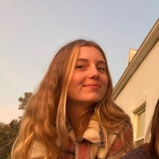
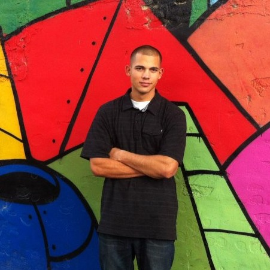

Hi, We're the Ocean Pollution Posse.
Our mission this quarter is to analyze plastic pollutants in the ocean. According to George Leonard, the chief scientist at the Ocean Conservancy, “At least half of [...ocean plastic waste] is not consumer plastics, which are central to much of the current debate, but fishing gear.” This fact surprised our team and inspired us to look deeper into the connection between the fishing industry and plastic in the ocean.
Meet the Team!

Hi, I'm Julia Wood and I will be the data visualization specialist for our team. I will also conduct data analysis and help put our website together. I am really looking forward to working on this project because I am passionate about protecting our oceans and uncovering spatial trends using web mapping!
